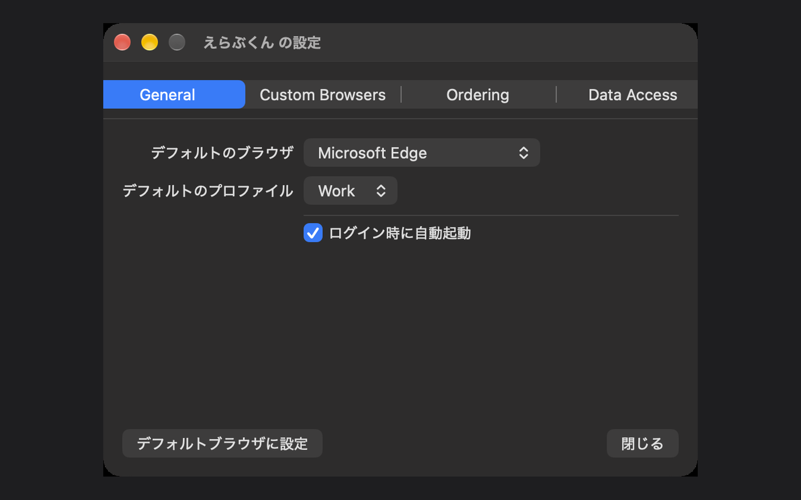
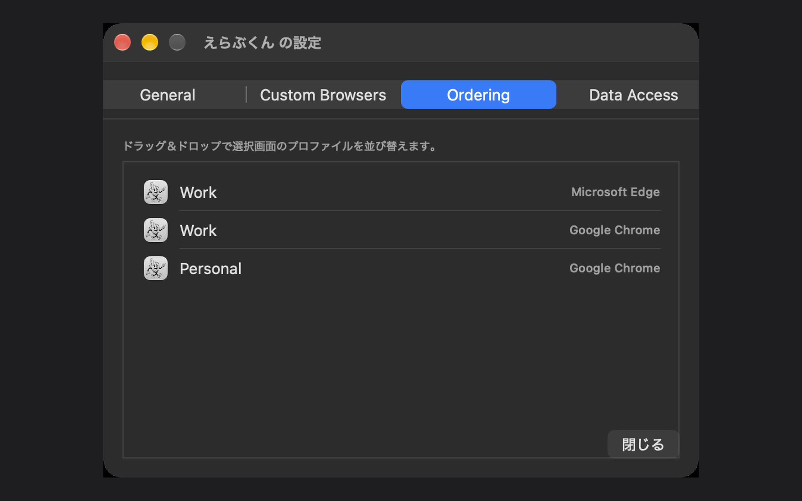

できること
ブラウザの自動振り分け
デフォルトブラウザとして設定するだけで、リンクを開くたびに使いたいブラウザを選択できます。
プロファイル単位で切り替え
Chrome / Edge / Brave / Vivaldi など Chromium 系ブラウザの複数プロファイルにも対応。仕事用・個人用アカウントを使い分けたい人に最適です。
軽量・常駐型
メニューバーに常駐し、必要なときだけポップアップで選択。普段は邪魔になりません。
スクリーンショット


インストール方法
- Releases ページから最新の
Erabu-kun.dmgをダウンロード - ダウンロードした
.dmgをダブルクリックして開く Erabu-kun.appをApplicationsフォルダへドラッグ＆ドロップApplicationsフォルダから起動- 「システム設定」→「一般」→「デフォルトウェブブラウザ」で Erabu-kun を選択
初回起動時に「開発元が未確認」といった警告が表示された場合は、Finder でアプリを右クリックして「開く」を選択してください。 本アプリは Apple の公証（Notarization）を通過済みのため、内容は安全性が検証されています。